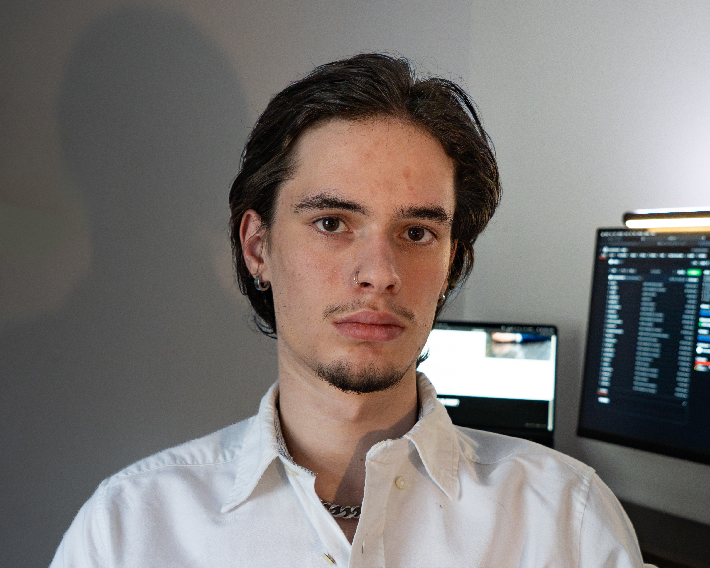

Photographer.
Videographer.
Content creator.
I am a photographer, videographer and content creator based in Guildford, Surrey. My work spans live music, portraiture, urban photography, landscape and analogue photography, with a particular interest in atmosphere, movement and visual storytelling.
Live music sits at the centre of what I do, but the wider aim is to create strong visual work that feels considered, useful and connected to the subject. That can mean documenting a performance, creating content around an artist or building a broader set of photo and video assets for promotion.
Built around the moment, then shaped for where the work needs to go.
Alongside photography, I work with video and short form content using Adobe Lightroom, Photoshop, InDesign and DaVinci Resolve Studio. My experience includes live music photography, short form editing and social content for bands and independent creators.
I focus on the parts of live work that make the final content feel specific to the event: movement, lighting, atmosphere, audience energy and the smaller details around the performance.
I am readily available to travel for projects where the work makes sense.
Planning a show, event or artist project?
Send over what you are planning, what you need covered and what you want the content to achieve. I can then work out the most useful photography, video or combined approach for the project.